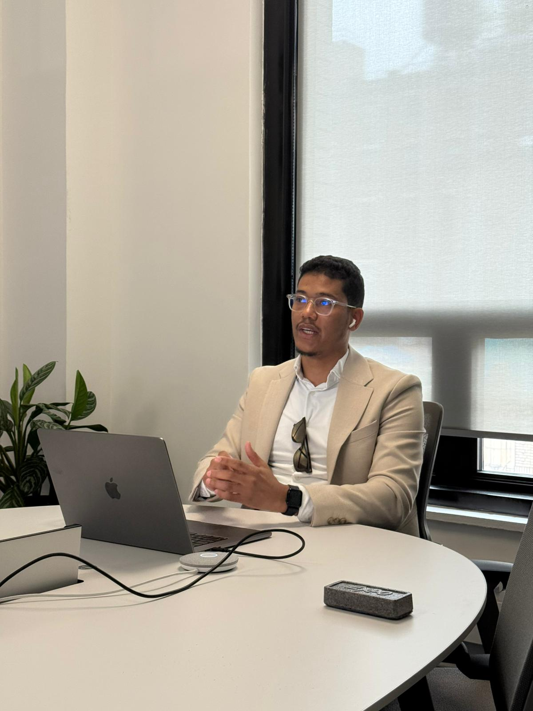
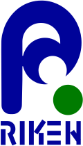
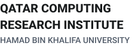

Dec 2025 — Present
Founder & CEO
DataBayt.AI · Abu Dhabi, UAE
Leading development of open-source software and datasets for the AI community.
I study the interpretability of large language and vision-language models — how they represent number, reason across modalities, and where that reasoning breaks down. Based at MBZUAI, Abu Dhabi.
I'm a PhD student in NLP at the Mohamed bin Zayed University of Artificial Intelligence (MBZUAI). My research centers on mechanistic interpretability: probing and steering the internal representations of LLMs and vision-language models to understand numerical reasoning, counting, and the conditions under which model evidence collapses.
Alongside my doctoral work I am the founder of DataBayt.AI, building open-source software and datasets for the AI community. I collaborate with the RIKEN Advanced Intelligence Project, among other collaborators including Imperial College London and King's College London. I previously worked on generative AI for low-resource languages, machine translation, and large-scale dataset design.



